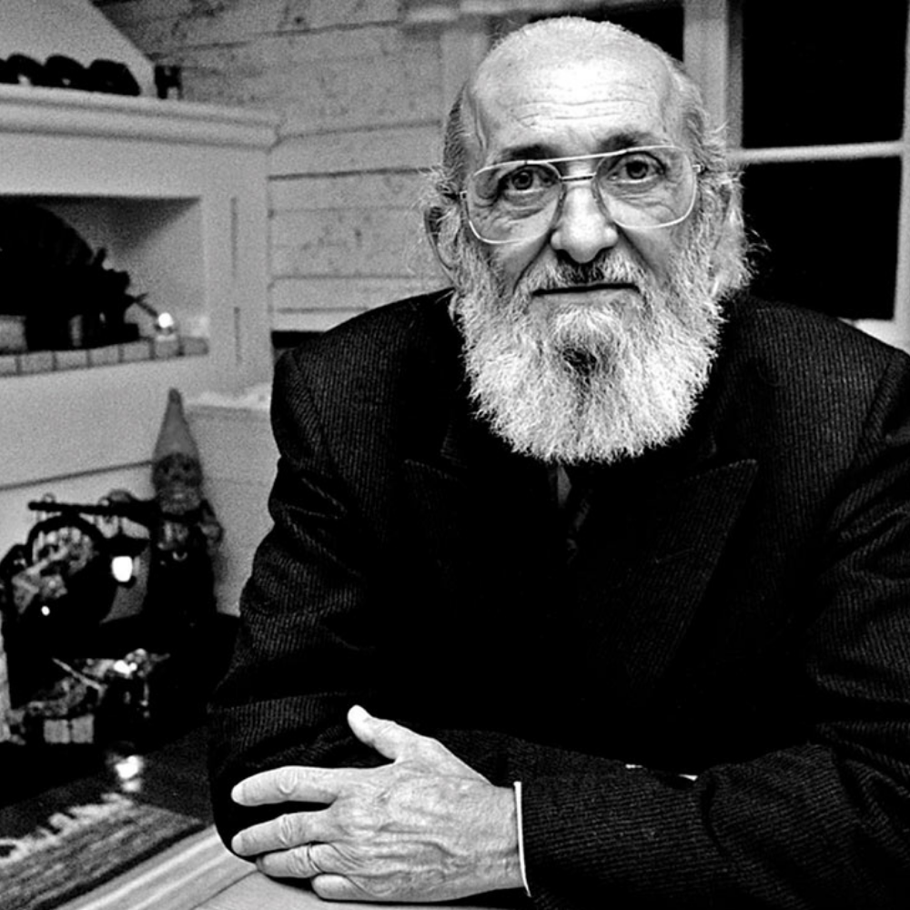

Seja bem-vindo ao nosso site em homenagem a Paulo Freire!
Neste mês, as Escolas Técnicas Estaduais (Etecs) homenageiam um dos maiores educadores brasileiros com uma semana de atividades socioculturais dedicada aos alunos e professores.
O pernambucano Paulo Freire nasceu em 1921 e é mundialmente conhecido pela sua contribuição na área de educação. Na década de 1960, Freire criou um método de alfabetização para adultos, aplicado em diversos países. Sua obra mais conhecida é Pedagogia do Oprimido, traduzida para 25 idiomas. Ao falecer em maio de 1997 na cidade de São Paulo, o educador deixou mais de 40 livros publicados. Em 2012, foi sancionada uma lei federal que declarou Paulo Freire patrono da educação brasileira.
Na década de 1960, Freire criou um método de alfabetização para adultos, aplicado em diversos países.
Sua obra mais conhecida é Pedagogia do Oprimido, traduzida para 25 idiomas.